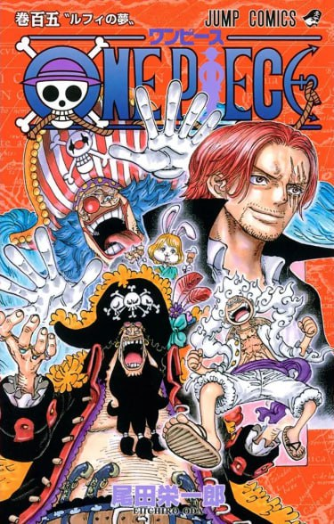

|

One piece
Рейтинг: 8.9/10
|
| Жарық көрген жылы: |
22-шілде, 1997 |
| Ел: |
Жапония |
| Аутор: |
Эйитиро Ода |
| Режиссер: |
Горо Танигути |
| Жанр: |
Шытырман, фантастика, комедия |
Кішкене информация:
| |
Оқиғаның басы бай, қолында билігі және жетерліктей абыройы бар қарақшылардың каролі Гол Д. Роджердің басын алумен басталады. Соңғы сөз айту рәсімі берілген кезде “Уан Пис” атты негізгі байлықты жасырғаны туралы айтады және барлығын сонв іздеуге шақырады. Осыдан кейін барлығы Гранд-Лайнға аттанады. Осыдан кейін ол жерде Ұлы Қарақшылар Дәуірі басталады. |
|